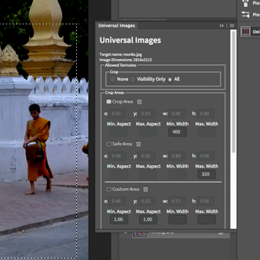

Universal Images Metadata Plugin
A responsive metadata plugin for Adobe Photoshop.
This plugin provides a user interface for adding responsive rules to any image using metadata.
It supports the RMD standard promoted by the W3C Universal Image Community Group.
Installation
The plugin only supports Photoshop CC and is therefore best installed via the Creative Cloud.
You can also download the binary build from the Github release page and install it yourself using ZXPInstaller.
You might also want to install the Metadata UI Extension. This allows you to quickly edit and the XMP metadata using the 'File info' dialog.
Usage

Units
All pixel units specified within the context of this plugin are resolution independent CSS pixels and defined by a viewing angle and not an absolute distance. The reference pixel is about 0.26mm (1/96 inch) on a device held at arm's length. The screen of the Apple iPhone 6 has a width of 375 pixels in portrait mode. The iPad has 768 x 1024 pixels.
The main panel is split up into five parts.
Allowed Derivates
This part is for the legal section. The author of the work can chose between three rules that define how the image can be cropped when it is optimized for the web:
- None: The image must not be modified at all. If the 'Crop Area' is defined, it must be respected. Only resizing is allowed.
- Visibililty Only: Cropping is only allowed to make sure the important parts stay visible even on small devices. Editorial integrity must not be compromised.
- All: Any cropping is allowed.
Crop Areas
There are three kind of crop areas. Each have their own meaning and constrains. To define an area, activate it by clicking on its title. The box to the left of the title becomes active. A selection appears on the image, representing the current area. Change the area by drawing a new selection while an area is active.
A click on the trashcan icon removes the area from the list.
Crop Area
This is the default crop area. A web server or other presentation software crops an image here by default. This adds the possibility of adding recommended regions for certain aspect ratios that extend the default presentation of an image. There is one property 'Min. Width' which needs to be set if the interpolation is set to 'linear'. This property defines the width that cropping should start. If it is set to 400, then any target with of less than 400 pixels is cropped.
Safe Area
This area contains the relevant parts of an image. It is never cropped into. It has one property 'Max. Width' that must be set if the interpolation is 'linear'. If the target width is smaller than this value, then the image is cropped to the safe area and resized to the target size.
Custom Area
There can be multiple custom areas. They are only considered if the interpolation is set to 'step'. The area which best matches a custom area is used for cropping. Every custom area can have the following filter attributes:
- Min. Aspect: The minimal aspect ratio of the target image so the area is considered. This must be a real number. 1.0 means a square image. A number smaller than 1 is a portrait aspect ratio.
- Max. Aspect: The maximum aspect ratio of the target image so that the area is considered.
- Min Width: The minimum width of the target image for the area to be considered.
- Max Width: The maximum width of the target image for the area to be considered.
Pivot Point
This is the reference point for the intermediate crops. The distance ratio between the border and this point is preserved.
If the pivot point is not defined the center of the crop area is used as a fallback. If that is not defined, then the center of the image is used.
To mark the center point, a small selection has to be made in the image. The center of the selection is used as the center point. This is due to a limitation of the plugin system in Photoshop.
Interpolation
This defines the way intermediate sizes are calculated.
- Linear: Intermediate sizes are calculated.
- Step: Only the defined areas are used.
File
- Commit: Add the metadata to the image. The image is not saved.
- Revert: Read the metadata from the image file and revert all changes.
Issues
Bugs and issues can be reported here.